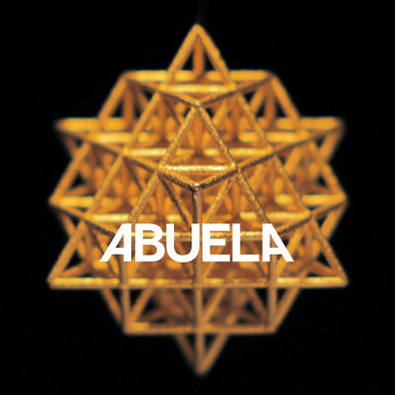
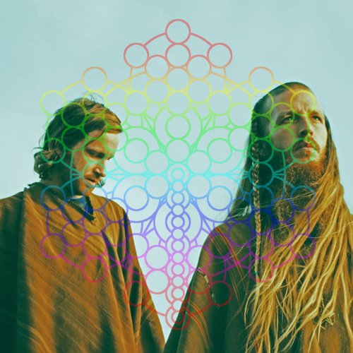
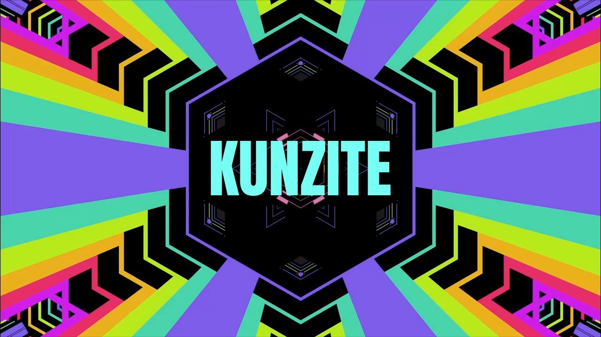
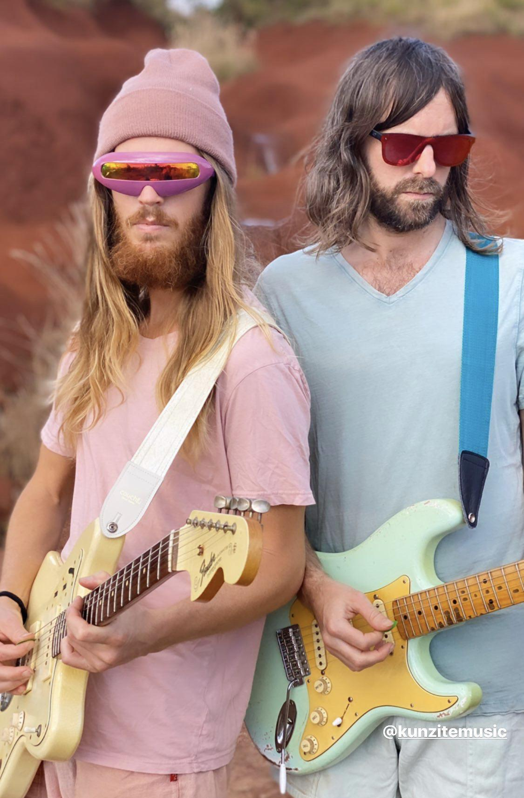

RATATAT es un duo neoyorquino de rock electronico formado por Evan "E*Vax" Mast y Mike Stroud a principios de los 2000's. Ambos integrantes son músicos multi-instrumentistas, destacando en sus producciones y shows en vivo la participacion de Mike en la guitarra y sintetizadores mientras que E.Vax toca el bajo y algunos instrumentos de percusion.
Para el 2020 el duo cuenta con 5 albumes de estudio y 2 albumes de remixes en los que utilizan sonidos que se fusionan desde el rock experimental a la electronica combinado con psicodelia e incluso utilizan sonidos tropicales y bases de hip hop. Su música es principalmente instrumental pero los ritmos de guitarra suelen ser sumamente expresivos y ademas utilizan en ocasiones samples y grabaciones de voces que complementan el contenido de las canciones.
Los integrantes han participado en conjunto y de manera independiente en producciones musicales de artistas de la talla de Kanye West, Kid Cudi, Bjork entre otros, ganandose el respeto del gremio del hip hop gracias a sus albumes de remixes a diferentes clasicos del rap neoyorquino, en los cuales agregan sus representativos efectos de guitarra y lineas de bajo experimentales.
Su Música:
Su discografia evoluciona progresivamente desde un sonido salvaje de rock y psicodelia combinado con hip hop a uno calmado y experimental que utiliza melodias sencillas y cantos de aves.
Ratatat (2004)
Tracklist:
- Seventeen Years
- El Pico
- Crips
- Desert Eagle
- Everest
- Bustelo
- Breaking Away
- Lapland
- Germany to Germany
- Sanish Armada
- Cherry
Classics (2006)
Tracklist:
- Montanita
- Lex
- Gettysburg
- Wildcat
- Tropicana
- Loud Pipes
- Kennedy
- Swisha
- Nostrand
- Tacobel Cannon
- Truman
LP3 (2010)
Tracklist:
- Shiller
- Falcon Jab
- Mi Viejo
- Mirando
- Flynn
- Bird Priest
- Shempi
- Imperials
- Dura
- Bruleé
- Mumtaz Khan
- Gipsy Threat
- Black Heroes
LP4 (2010)
Tracklist:
- Billar
- Drugs
- Neckbrace
- We Can't Be Stopped
- Bob Ghandi
- Mandy
- Mahalo
- Party with Children
- Sunblocks
- Bare Feast
- Grape Juice City
- Alps
Maginifique (2015)
Tracklist:
- Intro
- Cream on Chrome
- Maginifique
- Abrasive
- Countach
- Drift
- Prick of Brickness
- Nightclub Amnesia
- Cold Fingers
- Supreme
- Rome
- Primetime
- I Will Return
- Outro
Shows en vivo:
Las presentaciones de Ratatat se caracterizan por el fuerte uso de proyecciones visuales psicodelicas y camaras de humo que acentuan la atencion en la música mucho mas que en los artistas. La complejidad de las producciones musicales del grupo requiere un fuerte uso de pedales tanto para guitarra como bajo, haciendo frecuente que el escenario se encuentre repleto de instrumentos los cuales los mantienen constantemente ocupados durante su performance.
Con una larga trayectoria artistica y un peculiar sonido, Ratatat a logrado compartir tarima con grandes musicos como Daft Punk, Bjork, Franz Ferdinanz, Interpol, Vampire Weekend y The Killers con los cuales han ido de gira por Estados Unidos y Europa. Usualmente sus giras incluyen presentaciones en Estados Unidos, Canada, Reino Unido, Japon y Mexico. Ademas han participado en gran cantidad de festivales incluyendo el famoso festival de Coachella en 2015.
Otros Proyectos y colaboraciones:
Adicionalmente a su musica con Ratatat, se resalta el trabajo de Evan Mast como productor, acreditandose diversos temas en la discografia de Kanye West o el trabajo conjunto con Kid Cudi (Kid See Ghosts) siendo quizas su mayor éxito el tema Pursuit of Happiness, asi mismo E.Vax a destacado en sus producciones de hip hop con raperos como Jay-Z para el tema 100$Bill de la pelicula El gran Gatsby y el rapero Despot con temas en su album We're all excited y el sencillo House of Bricks, o Nas con el tema Adam and Eve, tambien ha producido numerosos sencillos, multiples EPs y un album en solitario.
Las dos mitades de grupo tienen cada uno proyectos independientes en los que acompañan al musico Justin Roelofs conocido como Agustin White de proyectos musicales como The Anniversary y White Flight, como parte de su estetica Mast y Stroud suelen titular sus proyectos en mayusculas lo cual se evindencia incluso en algunas canciones.
El primero de estos proyectos llamado ABUELA el cual nace en 2013 cuando E.Vax y White pasan un tiempo viviendo en Peru buscando inspiracion artistica y experiencias espirituales con los nativos de la region. Sin embargo este proyecto solo logra publicar dos sencillos a pesar de tener producido todo un album que no logra distribuirse. Estos sencillos son True Colors y SAPA con videos grabados en la region del valle sagrado Inca.
   Por su parte Mike Stroud tambien colabora con Agustin White en un proyecto de mayor duracion denominado KUNZITE el cual en 2018 publica su primer album Birds don't Fly y en 2020 lanzan en youtube el sencillo NOVAS con su video musical y de manera exclusiva para sus seguidores en el newsletter de correo electronico el tema ZEBRA, pocos meses despues se distribuye en formato fisico de vinil 7" el lado B de Novas llamado SATURN. A dos años de su anterior album Kunzite tiene terminado su proxima produccion discografica que se encuentra retrasado en su publicacion probablemente por temas de distribucion.
Extras
Algunas apariciones de Ratatat incluyen:
Dos temas producidos por E.Vax para la serie de HBO Silicon Valley.
El sencillo Tropicana aparece en la pelicula de 2007 Knocked Up.
El sencillo Kennedy aparece en Nick and Norah's Infinite Playlist pelicula de 2008.
En numerosos comerciales de television, entre ellos Bustelo para la compañia de automoviles Jaguar y Cream on Chrome para Nissan.